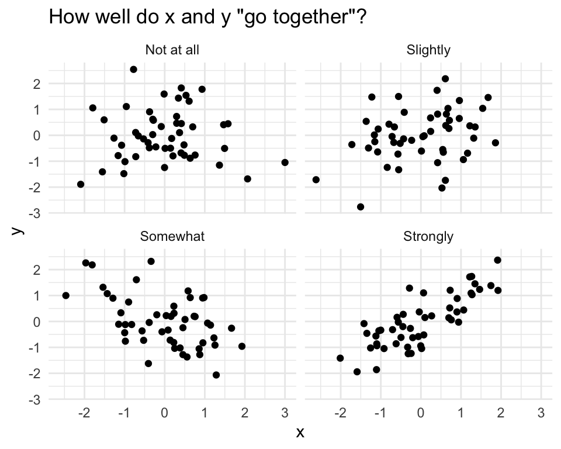
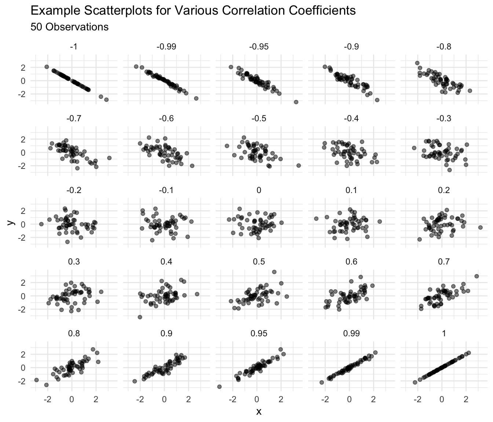
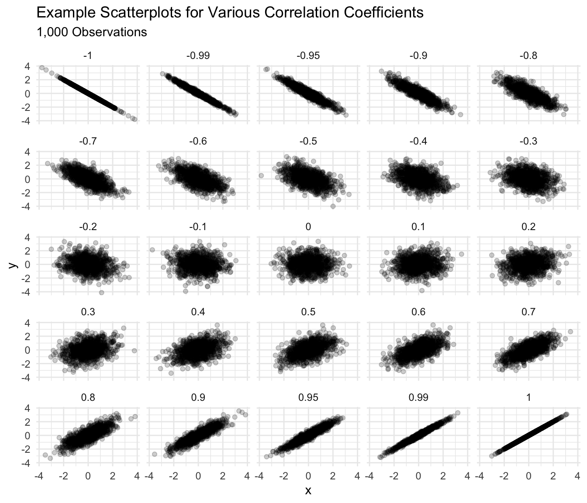
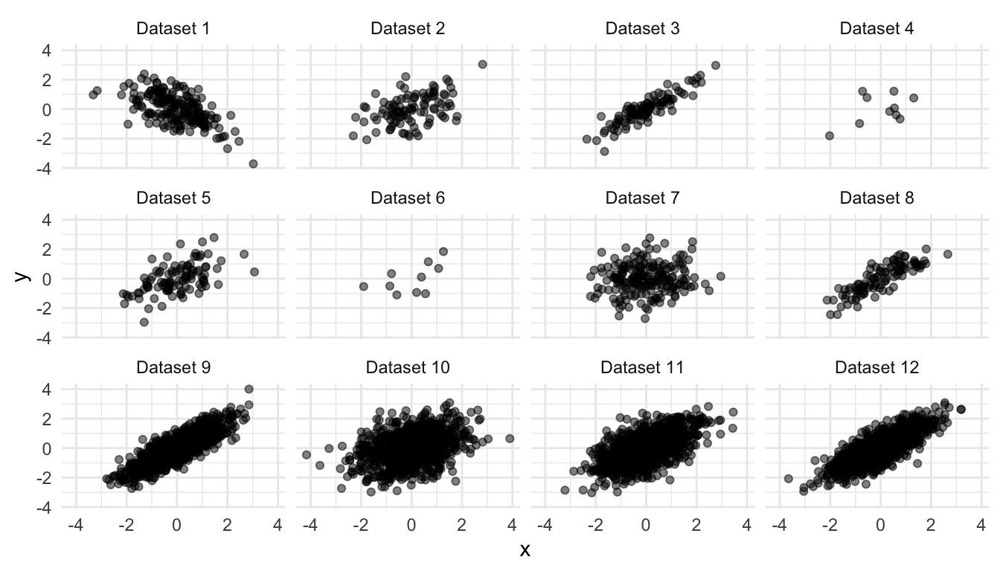
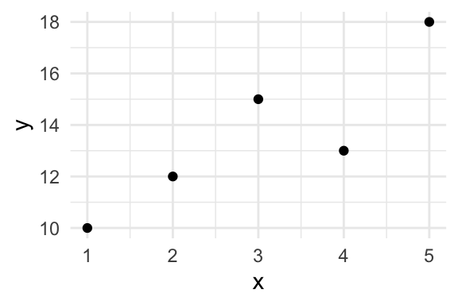
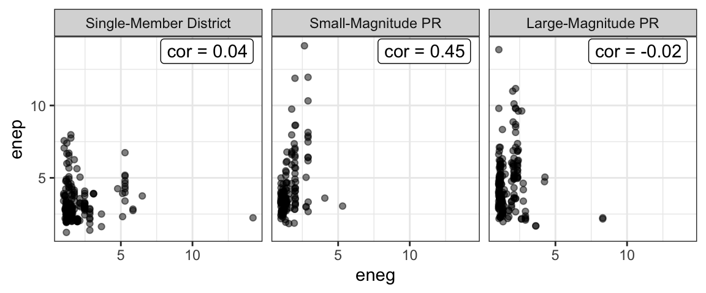

Chapter 10 Correlation Coefficient
We’ve discussed several ways to reduce data–to summarize the key features of many observations using a single (or a few) numbers.
- A histogram visually shows the density in chosen bins.
- The average tells us the location of a set of observations. Remember the seesaw analogy.
- The SD tells us the spread or disperson of a set of observations. We can describe a list of numbers as being “about [the average] give or take [the SD].”
You’ll remember that my view of the scientific method is concepts, models, measurements, and comparisons.

We haven’t talked explicity about “comparisons” yet, but we’ve been doing it all along. We compared the histograms of ideology across Congresses. We compared the average ideology across Congresses for both parties. We compared the SDs of ideology across Congresses for both parties.
But some numerical summaries directly compare multiple variables.
The correlation coefficient allows us to describe the relationship between two variables.
Before, we compared variables by comparing their histograms, averages, or SDs. The correlation coefficient is our first summary that compares two variables directly (rather than summarizing just one).
10.1 Intuition
The correlation coefficient measures how well two variables “go together.”
- “Go together” means “as one goes up, the other goes up [or down].”
- “Go together” has linearity built into the meaning. The correlation coefficient does not describe curved relationships.
The figure below shows some scatterplots and how well I might say these variables go together.

However, I am firmly opposed to any rules that link particular correlation coefficients to strength of relationship.
Imagine the following studies:
- A study comparing two measures of the same concept.
- A study comparing the effect of a dose of vitamin D in the first hour after birth on lifespan.
A “weak” or “small” correlation in the first study would be impossibly large in the second. The interpretation of the strength of a relationship must be made by a substantive expert in a particular substantive context.
I interpret a correlation coefficient my imagining the scatterplot it might imply. I use two guidelines to help me imagine that scatterplot:
- 0.9 seems a lot stronger than 0.7, but 0.4 seems barely stronger than 0.2.
- Around 0.4 [-0.4], the a correlation becomes “easily noticeable” without studying the plot carefully. For smaller datasets, this threshold increases toward 0.6 [-0.6] or higher; for larger datasets, the threshold shrinks toward 0.2 [-0.2] or lower.
Below are scatterplots of 50 observations to help you get a sense of the relationship between the correlation coefficient and the scatterplot. Notice that the relationship becomes “noticeable” for about 0.5 (or perhaps 0.4) in this small dataset.

Below is a similar collection of scatterplots, but for 1,000 observations. You’ll notice that the relationship becomes “noticable” for 0.3 or about 0.2 for this large dataset.


Solution
| dataset | r |
|---|---|
| Dataset 1 | -0.60 |
| Dataset 2 | 0.45 |
| Dataset 3 | 0.90 |
| Dataset 4 | 0.45 |
| Dataset 5 | 0.55 |
| Dataset 6 | 0.55 |
| Dataset 7 | 0.10 |
| Dataset 8 | 0.85 |
| Dataset 9 | 0.85 |
| Dataset 10 | 0.35 |
| Dataset 11 | 0.60 |
| Dataset 12 | 0.80 |
10.2 Computing
Suppose we have the dataset below.
| x | y |
|---|---|
| 1 | 10 |
| 3 | 15 |
| 2 | 12 |
| 4 | 13 |
| 5 | 18 |

10.2.1 By Hand
We can compute the correlation coefficient \(r\) as follows:
\(r = \text{average of} \left[ (x \text{ in standard units}) \times (y \text{ in standard units}) \right]\)
This definition implies the following process.
- Find the average of x.
- Find the SD of x.
- Convert x to standard units (i.e., z-scores, subtract the average then divide by the SD).
- Repeat 1-3 for y.
- Multiply each standardized x times it’s corresponding standardized y. Notice that the first x belongs to the first y, the second x belongs to the second y, and so on. So it’s important to keep the pairs together.
- Average these products.
We can implement this formula by creating the little table below and then averaging the final column of products.
| x | y | x in SUs | y in SUs | product |
|---|---|---|---|---|
| 1 | 10 | -1.41 | -1.32 | 1.87 |
| 3 | 15 | 0.00 | 0.51 | 0.00 |
| 2 | 12 | -0.71 | -0.59 | 0.41 |
| 4 | 13 | 0.71 | -0.22 | -0.16 |
| 5 | 18 | 1.41 | 1.61 | 2.28 |
The average of the final column is 0.88.
10.2.2 With R
In R, we can compute the corrlation between x and y using cor(x, y).
Note that dropping missing values is more complicated for pairs of data. If you want to drop missing values from the calculations, then cor(x, y, use = pairwise.complete.obs") is a good choice.
We can use the code below to find the correlation in the example above.
[1] 0.8814089| x | y | z |
|---|---|---|
| 2 | 8 | 7 |
| 4 | 0 | 3 |
| 5 | 5 | 5 |
| 6 | 3 | 6 |
| 4 | 6 | 6 |
| 3 | 5 | 3 |
10.3 Interpreting
In general, a correlation coefficient is NOT particularly useful. I introduce it for two reasons:
- Other people use it.
- We use it to obtain more useful quantities.
However, the correlation coefficient \(r\) has a concrete interpretation: If \(x\) is one SD larger, then \(y\) is \(r\) SDs larger on average.
We might also say that “a one SD increase in \(x\) leads to an \(r\) SD increase in \(y\) on average,” but we must take care that “leads to” describes a pattern in the data and does not describe a causal relationship.
10.4 Example: Clark and Golder (2006)
For a substantive example, consider Clark and Golder’s data.
# load parties dataset
parties_df <- read_rds("parties.rds")
# compute correlation between enep and eneg for each electoral system
grouped_df <- group_by(parties_df, electoral_system)
summarized_df <- summarize(grouped_df,
cor = cor(enep, eneg))
print(summarized_df)# A tibble: 3 x 2
electoral_system cor
<fct> <dbl>
1 Single-Member District 0.0369
2 Small-Magnitude PR 0.448
3 Large-Magnitude PR -0.0192| electoral_system | cor |
|---|---|
| Single-Member District | 0.04 |
| Small-Magnitude PR | 0.45 |
| Large-Magnitude PR | -0.02 |

As Clark and Golder expect, we get a correlation coefficient near zero in SMD systems. But contrary to their expectation, we also get a correlation coefficient near zero in large-magnitude PR systems.
Exercise 10.3 Interpret the correlation for small-magnitude PR systems above by filling in the following blanks:
- A one SD increase in ENEG leads to a _____ SD increase in ENEP, on average.
- A _____ unit increase in ENEG leads to a _____ unit increase in ENEP, on average.
Hint
How many units is one SD for ENEG? What about for ENEP? Going from SDs to the original units is like going from feet to yards: you just need to know how many feet are in a yard (or how many SDs are in each original unit).Solution
# load data
gamson_df <- read_rds("gamson.rds")
# compute correlation coefficient
cor(x = gamson_df$seat_share, gamson_df$portfolio_share)[1] 0.9423176Exercise 10.5 Use devtools::install_github("pos5737/pos5737data") to get the latest version of the pos5737 data package. Load the data set anscombe into R with data(anscombe, package = "pos5737data"). Use glimpse(anscombe) to get a quick look at the data. Realize that this one data frame actually contains four different datasets stacked on top of each other and numbered I, II, III, and IV. The variable dataset contains the dataset ID.
- Use a
group_by()andsummarize()workflow to compute a correlation coefficient for each of the four datasets. How do they compare? What do they suggest about the strength of the relationship between \(x\) and \(y\)? - Create a scatterplot of \(x\) and \(y\) with separate panels for each “dataset” (i.e., facet by the variable
dataset). How do they compare? How would you describe the strength of the relationship between \(x\) and \(y\) in each panel? Would you say that the correlation coefficient offered a good summary of each dataset?
Solution
# get latest version of data package
devtools::install_github("pos5737/pos5737data")
# load anscombe data
data(anscombe, package = "pos5737data")
# quick look
glimpse(anscombe)Rows: 44
Columns: 3
$ dataset <chr> "I", "I", "I", "I", "I", "I", "I", "I", "I", "I", "I", "II", …
$ x <dbl> 10, 8, 13, 9, 11, 14, 6, 4, 12, 7, 5, 10, 8, 13, 9, 11, 14, 6…
$ y <dbl> 8.04, 6.95, 7.58, 8.81, 8.33, 9.96, 7.24, 4.26, 10.84, 4.82, …# compute correlations for each version of the variable "dataset"
grouped_df <- group_by(anscombe, dataset)
summarized_df <- summarize(grouped_df,
cor = cor(x, y))
print(summarized_df)# A tibble: 4 x 2
dataset cor
<chr> <dbl>
1 I 0.816
2 II 0.816
3 III 0.816
4 IV 0.817